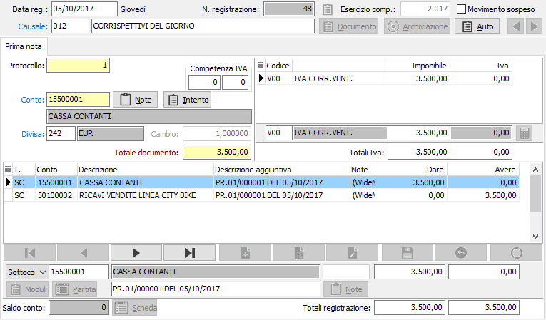

Registrazione di corrispettivi ventilabili
Per la registrazione di corrispettivi ventilabili occorre premettere che il calcolo della ventilazione si basa sull'articolazione degli acquisti base di ventilazione. Infatti, non tutti gli acquisti concorrono alla formazione della base di ventilazione.
È pertanto necessario che gli acquisti di merce validi ai fini del calcolo della ventilazione siano stati registrati utilizzando apposite causali contabili, caratterizzate dalla presenza del valore "fattura acquisto base ventilazione" nel campo tipo documento. L'utilizzazione di queste particolari causali consente al programma di stabilire la consistenza degli acquisti di merce validi per il calcolo della ventilazione.
Nella sezione Iva viene richiesto semplicemente l'importo complessivo dell'incasso del giorno. Nella sezione contabile viene quindi imputato tutto l'incasso lordo (Iva compresa) al conto ricavi. Naturalmente una parte del ricavo verrà stornata e imputata a Iva corrispettivi a fine periodo Iva, quando, effettuata la liquidazione periodica, sarà possibile conoscere l'esatto importo dell'Iva sui corrispettivi ventilabili.
